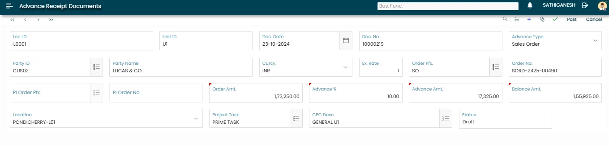

<div data-category="Financials" data-title="Advance Receipt Request" data-updated="December 01, 2025" data-contributors="RoadmapIT" data-breadcrumb="Home,Financials,Advance Receipt Request">
  <div class="page-content">
    <p>This Screen is used to raise the advance Receipt Document.</p>
    <h5>Navigation path:</h5>
    <p class="fs-6">Financials \ Transaction \Advance \ Advance Receipt</p>
    
    <ul style="list-style-type: none; align-content: center">
      <li class="mouse-icon">
        Clicking the
        <i class="bi bi-plus text-primary"></i>
        Add button to create Advance Receipt Document.
      </li>
    </ul>
    
    <ul style="list-style-type: none; align-content: center">
      <li class="mouse-icon">Select the Location and Unit.</li>
      <li class="mouse-icon">Select the Customer.</li>
      <li class="mouse-icon">Select the Sales order.</li>
      <li class="mouse-icon">Enter the Advance %.</li>
      <li class="mouse-icon">Advance Amount will update based on Advance %.</li>
      <li class="mouse-icon">Click post to complete the entry and the document can be forwarded for approval.</li>
    </ul>
  </div>
</div>